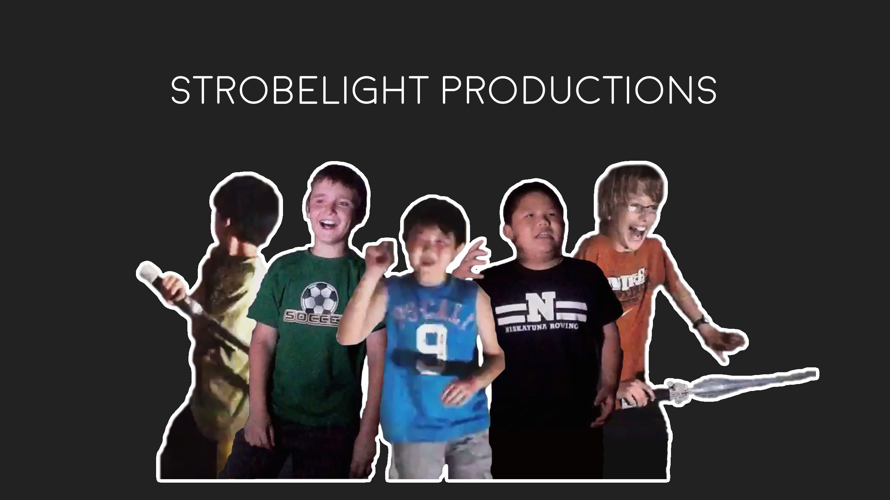

My name is Samson Zhang. I was born in Niskayuna, a town in upstate New York. My parents are from Henan, China. Today, I live with my mom and sister in New York City, and attend Columbia Secondary School in Harlem.
In addition to filmmaking, I love playing piano, making music, and coding. Every single part of this entire website is coded from scratch; I had a lot of fun experimenting with animation and fancy CSS and JS things I had never done before, like building my own image slider in a week of nonstop troubleshooting that wasn't painful at all.
I've been playing piano for about 9 years now. I've experimented with music production a bit; I've produced songs written by friends and composed and produced a few pieces for my short film, Fallen.
“Filmmaking is the art of telling stories through film.”
I love filmmaking because it's such a powerful way to document events, to tell stories, and to spread messages.
I love filmmaking because it's such an effective way to educate, to inform, to teach, to listen, and to learn.
I love filmmaking because it brings me into contact with new people and their ideas and stories.
I love filmmaking because it gives me a way to learn more about the things I love and share them with the world.
I love filmmaking because it lets me be creative and challenge myself, to keep doing my best, to keep improving.
I love filmmaking because through it I can learn, teach, document, commemorate, show, remind, collaborate, talk, listen, play, compete, and create.
“Do to learn, not learn to do.”
“Four years ago, my friends and I sawed an old apple crate in half...”
A nice little photoshopped-together thing of said friends:
Together, myself and some friends made three episodes of Strobelight Productions, shot on my iPad and edited using Windows Movie Maker on my laptop.
However, a year after our first episode, my family moved to New York City. I started making gaming videos and Minecraft parodies; while the singing, lyrics, and production quality is nothing to write home about, these videos are what taught me the basics of how to use an NLE (non-linear editor, i.e. Camtasia Studio, Sony Vegas, Premiere Pro) to edit together videos and audio.
wwsalmon 1.0
I've always loved technology. I remember spending hours on a desktop PC in my basement, tweaking every setting until it inevitably broke Windows and had to be reset; this continued with each of the old laptops I was given.
As a result, tech YouTubers were my biggest idols when I was young - they literally made a living off of talking about computers and phones and technology on camera. I wanted to be like them.
Two years ago, after our ancient ASUS laptop with a broken hinge was finally deemed unusable as the sole non-phone computer in the house, we got a shiny new Dell XPS 13 laptop. With YouTube's mantras of "gear doesn't matter" and "nothing is impossible" ringing in my ears, I took our family's old camcorder, convinced my mom to buy a cheap tripod, and started chasing YouTube fame.
In the creation of the review, I put together everything I knew from watching tech YouTubers for years and my experience with NLEs from Minecraft parodies. There was no color grading and I used limited Camtasia Studio software to edit, but looking back I'm surprised with how smooth and polished it is given how little I knew.
My Dell XPS review got 20,000 views and tons of positive feedback, and my subscriber count shot from 6 to 100. I kept making review videos whenever anything new was bought, convinced that at this rate, I would be making more than my parents off of YouTube in no time.
wwsalmon 2.0
A year and a half ago, in January of 2016, my dad and I went to B&H and somehow I convinced him to buy me the Sony RX10 II, a $1299 fixed-lens 4K video camera. I had always felt that, even though I was able to hit 300 subs with a cheap camcorder and my Blue Yeti mic, my gear was the thing that was holding me back from exploding in popularity and reaching stardom. My plan was that, once I was able to get my hands on something like the RX10 II, I would be able to pump out magnitudes more high quality videos and my channel would take off.
Instead, what resulted was a 1-year hiatus where I didn't make any tech reviews or videos of any sort. I was stunted by the steep learning curve of using a DSLR; this drove me to seek out filmmaking YouTube channels that taught me how to use my DSLR to film things properly, but also drew me into the world of filmmaking outside of a studio environment and talking about a specific product.
Up until this point, my sole motivation for making YouTube videos was belief that I could eventually have a career on YouTube and make a living off of it, based off of idolization of internet and YouTube celebrities. Eventually, I realized that maybe there was a lot more to life that I would be interested in.
I tried to continue pushing out tech videos as I had, but between losing motivation for growing my channel and being increasingly dissatisfied with the quality of video that I could make, I filmed lots and posted nothing for a year.
Somewhere in this timeline I decided to take the leap and commit to learning Premiere Pro and other top-of-the-market NLEs and editing software; using my new tools, I finally published a new video, my Sony XB950 review.
The video was massive step up in quality from my previous reviews, both in raw production quality and the amount of effort and creativity that I poured into it. From this point on, YouTube became not something that I just wanted to grow, but a place where I could experiment and grow my cinematography and editing skills.
Ironically, this strategy got me what I was initially aiming for - sponsorships and review requests. Recently, Alien contacted me with an invitation to review the Sound Intone P6 headphones; I pushed myself to make the best review video I could using all that I had learned in the year from ny XB950 review, experimenting even more with lighting, color grading, and motion graphics, creating my most polished video yet.
2 Train Robotics
Up to this point, everything I did I did on my own. Nobody told me to do it, there were no programs that encouraged me to do it, nobody helped me do it.
In 9th grade, I joined my high school's FRC robotics team, 2 Train Robotics.
With another team member, I founded 2 Train Robotics' Media Team, which went on to produce a crowdfunding video that was never released due to problems with crowdfunding platforms and DOE regulations and our team's first ever Chairman's Award video. Sam and I also documented team events and maintained 2 Train's social media platforms and website, picking up what already existed and setting it up for the future.
All my filmmaking and editing skills that I had built up through my YouTube channel were finally being asked for. Being a part of 2 Train Robotics in the 2016-17 season was one of the most amazing experiences that I have had.
Short Films
From all my research about cameras and DSLR filmmaking, I gained an interest in narrative filmmaking. I learned about story structure, special effects, and even more that I could do with Premiere Pro, After Effects, and a proper camera.
I've always heard about how hectic and intense making narrative films was, but with my studio and documentary filmmaking backgrounds, I didn't believe it could be that bad. I was skeptical of all the filmmakers who said that "everything that can go wrong on set will go wrong, and you have to be prepared to change and improvise anything".
However, I got my taste of this when my biology teacher announced that the final project for our immune system unit was to create a House M.D.-inspired TV episode about diabetes. We were given a script outline with basic plot points listed out, and told to fill in the rest for ourselves.
With one of my friends and two other classmates, this became Table 6's House MD project. All the production nightmares that YouTube videos had described came true; we were constantly chasingthe dying sunlight; scheduling was absolute hell; we had to be careful and simultaneously constantly rushing to get everything done. The whole film was filmed on 2 production days and 8-10 hours, which was compiled into one final 15 minute video.
Through my House M.D. project, I got my first taste of things like scriptwriting and camera coverage and learned a ton. However, the whole project absolutely paled next to my next short film project (another final project for my biology class), Fallen.
Fallen was 24 minutes in length and took who even knows how many hours to film across more than two weeks. The film was written from pretty much scratch, and employed a whole classroom of extras and locations spanning ten city blocks of a park; furthermore, extensive special effects were used to represent mind reading powers and plenty of action. From pre-production, to production, to post-production, the making of Fallen was an insane month of my life, and I had a ton of fun.
Concurrent to the filming of Fallen, I also filmed and edited a friend's group's project, And Then There Was None. The film was much simpler and 15 minutes in length, but I still had a ton of fun with it.
Conclusion - What's Next?
My run with 2 Train Robotics ended with Samuel Martinez taking over the media team and me being shut out of early meetings for the 2017-18 season. I've still yet to edit the final 2016-17 season documentary and a few montage videos, but I won't be able to work for them any more.
Alien has hinted at future partnerships, so maybe more products coming my way? But given where I'll be spending my next 3 years, I have no idea if I'll have the same controlled space that my YouTube channel has provided me in the past.
Still, I'm confident that there will be more opportunities in the future, in narrative, documentary, and other areas of filmmaking. I'm also experimenting with tons of other things - web design and development, music production, etc. I certainly will have lots to do in the remainder of this summer and beyond. I'm really excited about the future, and can't wait for what it will bring.